Választható hősök


D.Va
Története
D.Va egy korábbi professzionális e-sport játékos, aki most ezen tapasztalait felhasználva irányítja a legkorszerűbb gépezetet, hogy megvédje a szülőföldjét. Nagyon versenyképes egyén, ami jól párosul a professzionális e-sport képességeivel, ez teszi őt egy igazán hatásos pilótává. Soha nem hátrál meg, D.Va mindig azért játszik, hogy nyerjen. Első benyomásra gondtalan, irreleváns atitűddel rendelkezik, azonban D.Va-t érzelmileg terheli, hogy megvédje a hazáját.
D.Va elsősorban tank karakter lenne, de ez nem azt jelenti, hogy csak golyószivacsnak lehet használni. Játékstílusa részben eltér a Reapertől. Igaz, hogy mindkettőjüknél azonos, hogy minél közelebb vannak az ellenfélhez annál nagyobb a sebzésük. De D.Va elsősorban az ellenfél megzavarásában jó, illetve a folyamatos nyomás fenntartásában. Boosterjével (Gyorsító) az ellenfeleit félre tudja lökni, ráadásul sebzi is az ellökött ellenfeleket. A Defense Matrixal (Mátrix Védelem) a legtöbb ultimate képességet képes kivédeni, ha a hatókörében benne van. A Boosters (Gyorsító) és a Self Destruct (Önmegsemmisítés) kombinációval a robbanásra felkészülő robotot előre tudod küldeni, néha meglepve az ellenfeleket, viszont ha az ellenfél hamar észre veszi és fedezékbe tud vonulni, akkor nem tudja őket sebezni, de magasabb szintű játékosok esetén inkább a csapat szétzavarására szokták az használni a Self Destructot. mint konkrét likvidálásra.
Képességei
|

Szuper rakéták |
Egy sorozatnyi rakétát lő ki D.Va. | E |
|
Gyorsitó |
D.Va robotja további két meghajtó motorral van fel szerelve, melyek segítségével gyorsan tud meg tenni nagy távolságokat. | SHIFT |
|
Védelmi mátrix |
D.Va aktiválhat maga előtt egy védelmi rendszert, ami felfogja a bejövő lövedékeket. | JOBB KLIKK |
Hangok
D.Va elérhető
Alig várom hogy harcoljunk
Minden rendszer ellenőrizve
Azért játszok hogy nyerjek